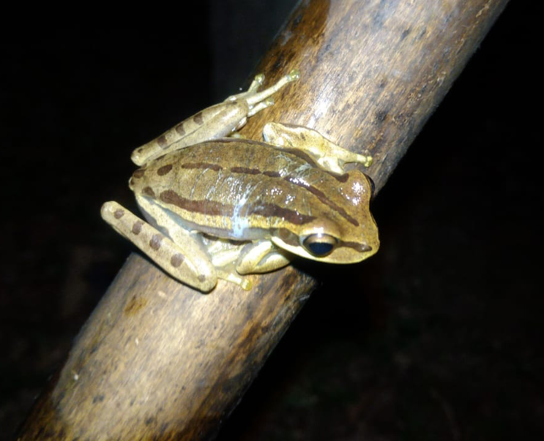

Costas marrom claro com faixas laterais marrom escuro, as faixas as vezes formam pontos arredondados. É arborícola, os machos vocalizam às margens dos riachos onde reproduz. Os ovos são postos em ambientes de água corrente dentro da mata. Não é venenosa e distribui-se no Paraná, Santa Catarina e Rio Grande do Sul.
